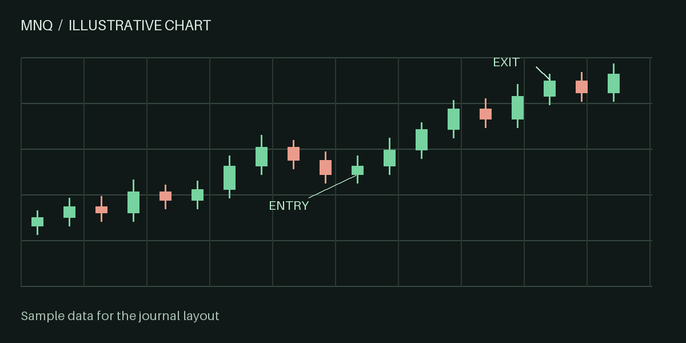

MNQ · Opening range pullback

My notes
I waited for price to break above the opening range and return to the breakout level. I entered after the next candle closed back above that level and exited when price reached the prior swing high.
Next time, I’d mark the swing high before entering so I can judge how much room the trade has to move.